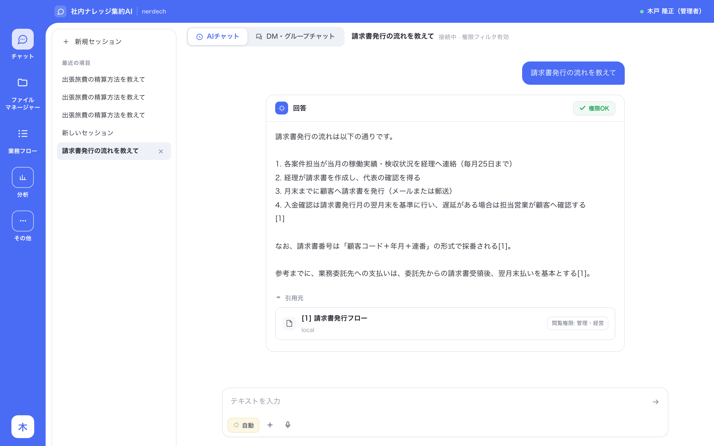
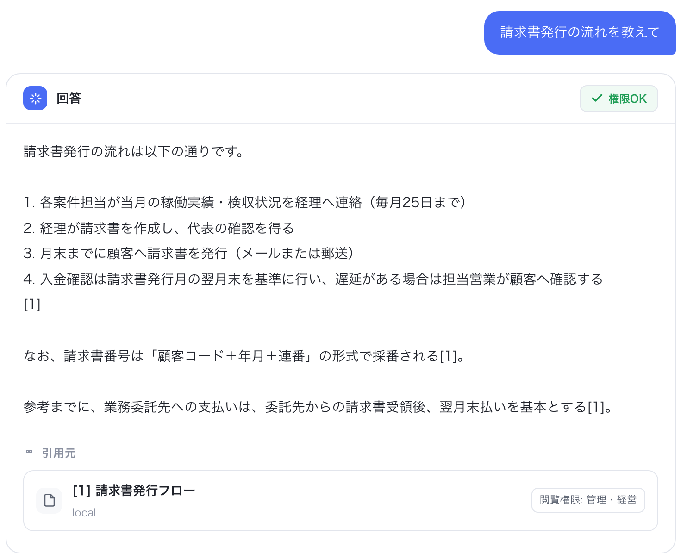
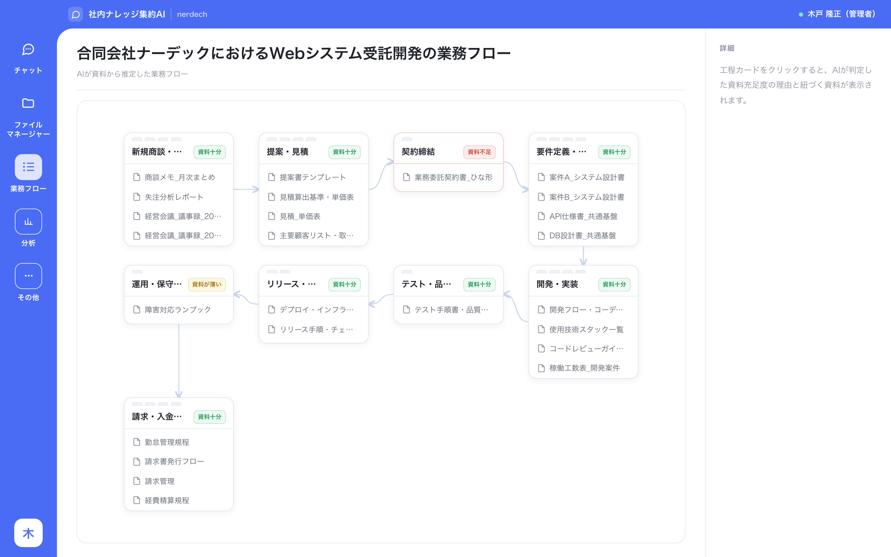

company brain
社内ナレッジ集約AI
Company Brain は、社内の資料をひとつの知識ベースにまとめ、質問した人が見てよい範囲で答える、社内ナレッジ集約AIです。

一元管理とは、何か。
会社の知識は、いまどこにありますか。
たとえば
- 共有フォルダにある、最終版とは限らないファイル
- 個人のPCにだけ入っている、見積の元データ
- メールに添付されたまま止まっている、合意内容
- チャットの流れに埋もれた、決定事項
- 「あの人に聞けばわかる」という記憶
探すのに時間がかかる。聞く相手が決まってしまう。その人が辞めると、経緯ごと消える。AIを入れても、社内のことは答えられない。
一元管理は、資料を一か所に移すことではありません。
フォルダを整理し直しても、翌日から新しい資料は増えます。ルールを決めても、守る負担は現場に残ります。置き場所を揃える作業は、終わりません。
一元管理とは、会社にひとつだけ持つものが3つあること。
-
入口がひとつ
資料がどこにあるかを知らなくても、聞けば答えが返り、根拠になった資料が示されます。
-
見てよい範囲の決め方がひとつ
誰がどの資料を見てよいかを、一か所で決めます。質問した人が見てよい資料だけを使って答え、見てはいけない資料は、回答にも引用にも出しません。
-
会社の形の見え方がひとつ
集まった資料から、業務の流れと、資料が足りない工程、特定の人に集中している知識が見えます。
その上で、AIが働く。
一元管理は、答えるための準備ではなく、AIに仕事を任せるための前提です。会社の知識がひとつになれば、質問への回答だけでなく、資料をもとにした文書の下書きや、手元のファイルの整理まで、AIに任せられます。
できること
聞けば、根拠つきで答える。
質問を日本語で入力すると、社内の資料から答えを作り、引用元の資料を一緒に示します。根拠をその場で開いて確かめられるので、答えを鵜呑みにする必要がありません。

見てよい人にだけ、答える。
回答には、質問した人が閲覧できる資料だけが使われます。引用元の資料にも閲覧できる範囲が表示され、見てはいけない資料が回答や引用に現れることはありません。
権限のない資料は、回答にも引用にも出しません。
資料から、会社の業務が見えてくる。
取り込んだ資料から、AIが業務の流れを推定し、工程ごとに資料が足りているかを判定します。図の「契約締結」のように、資料が足りない工程は、誰かに聞く前に見つかります。

はじめ方
フォルダを選ぶだけで、取り込みが始まる。
-
取り込むフォルダを選ぶ
-
AIが資料を読み取り、種類と内容を整理する
-
取り込みが終われば、質問できる
エンジニアがいない会社でも使えるように、設定は最小限にしています。
こんな質問に答えます
- 出張旅費の精算方法を教えて
- 請求書発行の流れを教えて
- 有給休暇の申請方法は?
- 経費精算のやり方を教えて